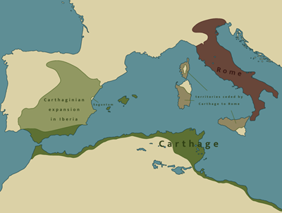

.jpg#Licensing "Lien vers l'image")
La première guerre punique parle surtout de combats sur la mer, pour contrôler la Sicile.
La deuxième guerre est la plus connue. Le général Hannibal a traversé les Alpes avec des éléphants pour attaquer Rome.
La troisième guerre s'est terminée par la destruction de Carthage. Après cela, Rome est devenue très puissante.
Réalisé dans le cadre du cours de 4TID - WEB — RIYAD HARRATI
Toutes les images sont libre de droit cliquez dessus pour être rediriger vers la page de l'image.